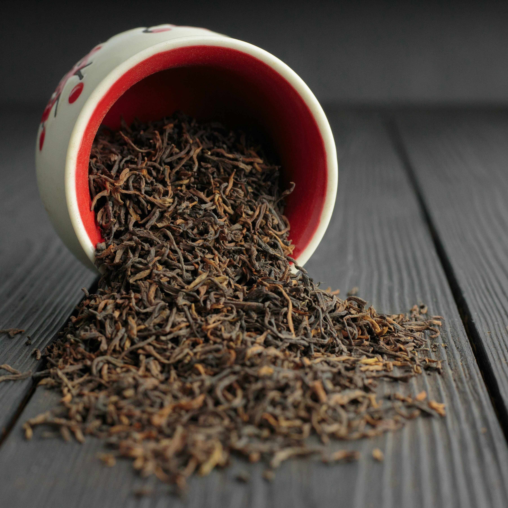
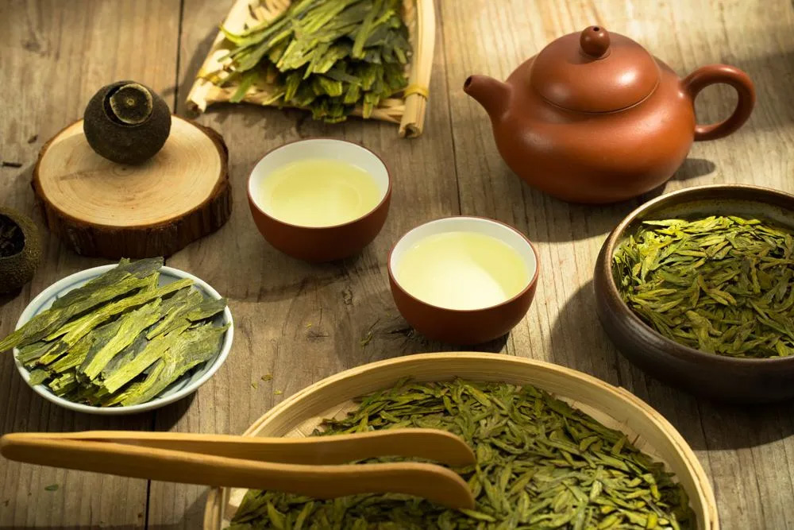
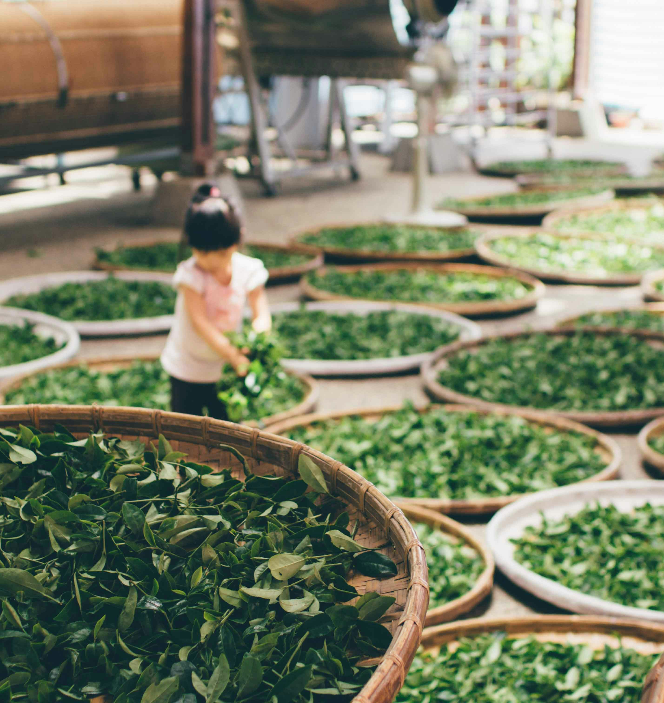
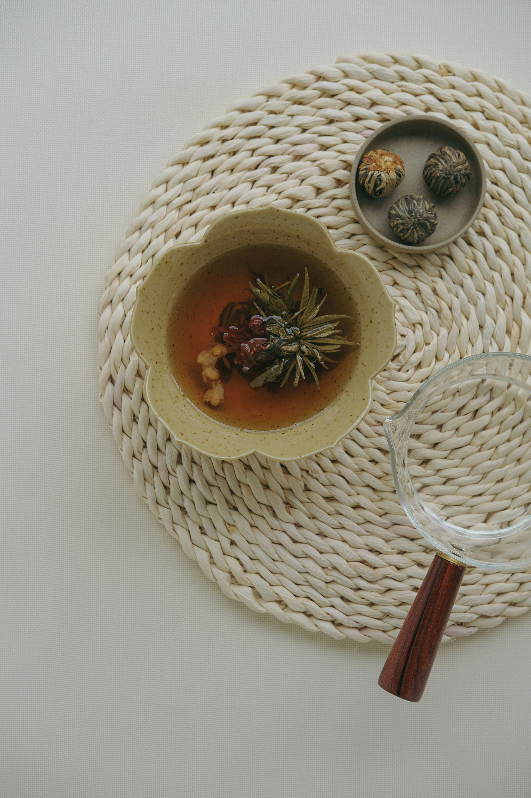
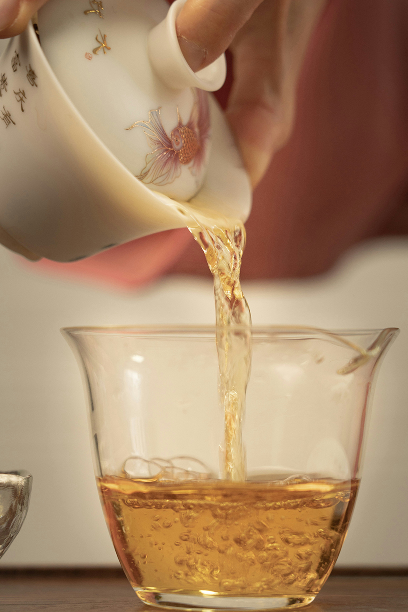

茶 ―― 千年の歴史が息づく、東洋の味わい
世界最古の飲み物のひとつである茶の起源は、数千年前の古代中国にまで遡ります。
皇室への献上品から、日常に寄り添う一杯へ。
シルクロードを渡り、日本の茶道へと受け継がれた茶は、
静けさ・礼節・分かち合い・癒しを象徴する文化として、
時代と国境を超えて愛され続けてきました。


文 化 ―― 一杯に宿る、暮らしの哲学
茶文化は地域によって多彩な表情を見せます。
中国では、清らかさと自然の味わいを大切に。
日本では、茶道を通して心の和と一期一会の精神を育む。
イギリスでは、アフタヌーンティーが社交と優雅な時間を象徴する。
形は変われど、茶はいつの時代も人々をつなぎ、心をほどく存在です。

製 法 ―― 一葉から一杯へ、匠の技
一杯の上質な茶は、大地の恵みと丁寧な手仕事から生まれます。
摘採、萎凋、殺青、発酵、揉捻、乾燥――その工程の違いが、
緑茶・紅茶・烏龍茶・白茶・プーアル茶など、豊かな個性を生み出します。
私たちは産地を厳選し、手摘みと伝統製法にこだわり、
茶葉本来の香りと深い余韻をそのままお届けします。

健 康 ―― 自然がもたらす癒しの力
茶には、ポリフェノールやアミノ酸、ビタミンなど、豊富な天然成分が含まれています。
適度な摂取は、新陳代謝のサポート
抗酸化によるエイジングケア
リラックスと集中力の向上
体内バランスの調整など、日々の健康をやさしく支えてくれます。
香り立つ一杯が、忙しい日々に静かな余白をもたらします。

体 験 ―― 一杯の茶が開く、小さな旅
最初の一口に広がる香り、変化していく味わい、立ちのぼる湯気。
茶を味わう時間は、心を整え、日常の喧騒をそっと和らげる小さな旅のようです。
茶とコーヒー――異なる魅力、異なるライフスタイル
どちらも活力を与える飲み物ですが、その体験は大きく異なります。
茶のカフェインはゆるやかに作用し、安定した集中力をサポート。
コーヒーは力強い刺激が特徴的だが、茶は香りと余韻の繊細な奥行きで魅了します。
コーヒーがスピードとエネルギーを象徴するなら、茶は調和と深み、そして心の静けさを象徴します。